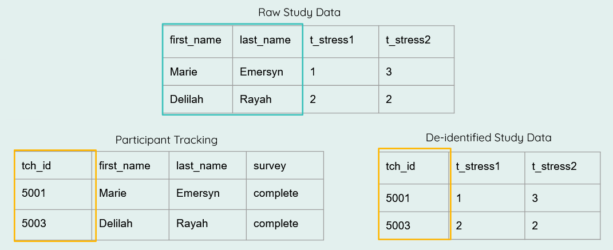

Data cleaning for data sharing
By Crystal Lewis in tutorials
February 14, 2023
Through various conversations over the last several months, a recurring question I keep hearing is, what makes a clean dataset? What steps do we expect someone to take before handing off a dataset that is considered “clean”? And I will tell you right now, there is no standard answer for this question. Even within fields, within projects, or within teams, you will get different answers depending on who you talk to, their role in the research cycle, and their past experiences and/or training with data.
This prompted me to write this blog post series. There are currently no standards for what constitutes a clean dataset, but as we move more towards openly sharing research study data, it seems important that researchers, at least within fields, are cleaning data in a similar way for both consistency and usability.
In this post I hope to lay out some ideas for standardzing the data cleaning process for the purposes of general data sharing, specifically within the field of education research. I think it is important to differentiate between a dataset cleaned for general purposes and a dataset cleaned for a specific analysis. The former means that the dataset is still in its truest, raw form, but has been minimally altered to allow the data to be correctly interpreted. A dataset cleaned for general data sharing means that it includes the entire study sample (no one is removed), all missing data is still labelled as missing (no imputation is done), and no analysis-specific variables have been calculated. Any further cleaning is taken care of in another phase of cleaning during analyses.
So you can think of these as three unique data files:
- True raw data
- This is the untouched raw file that comes directly from your data collection source.
- If your data is collected on paper, this is the data that has been entered into a machine-readable format.
- The general clean study data
- This is the data we will be discussing in this post
- Your analytic data
- This dataset is created from the clean dataset above, but is further altered for a specific analysis used in a publication
In this three part series I hope to cover the following things:
- In this first post, I hope to start the conversation about what alterations should be considered in every data cleaning process.
- In the second post I will discuss what steps are important in developing a data cleaning workflow and what documents are helpful in guiding that process.
- In the last post, using the workflow laid out in the second post, I hope to work through a sample education dataset to show what this process might look like in the real world.
Data cleaning standards
A good starting point for thinking about standards comes from an article written by Omar Elgabry. He writes about five data quality indicators (originally found on Wikipedia) that should be considered when you review your data. The way I interpret these indicators for education research data cleaning are as follows.
- Complete - All forms that you collected have been entered and/or retrieved. You should also not have extraneous data that doesn’t belong (duplicates, participants who aren’t consented, etc.). Your participant tracking database should be used to confirm the completeness of your data.
- Valid - Variables conform to the constraints that you have laid out in your data dictionary. Remember from my previous post, your data dictionary lays out your expected variable names, types, ranges, categories, and more.
- Accurate - This is not always possible to know in the data cleaning process (whether a value is true or not), but you can sometimes assess the accuracy of your values based on things such as your existing knowledge of that specific participant or case.
- Consistent - Values align across sources. For example date of birth collected from a student survey should match date of birth collected from a school district.
- Uniform - Your data is standardized across forms and time. For example, free/reduced price lunch status is always provided as a numeric variable with the same value representation, or school name is consistently spelled the same way throughout your data.
And I’ll add a few more indicators to this list.
- De-identified: All personally identifiable information (PII) is scrubbed from the data to protect participant confidentiality (if required by your IRB/consent process).
- Interpretable: Data have human and machine-readable variable names (see style guide), as well as variable and value labels added as needed to aid in interpretation.
- Analyzable: By this I mean that our data is in a rectangular (rows and columns), machine-readable format and adheres to basic data structure rules.
Data cleaning checklist
Based on the standards above, I think there are several steps that can be added to a checklist to guide researchers in their data cleaning process. These steps, although very general here, once elaborated on for your specific data can help you produce data that is cleaned in a consistent and standardized manner within and across projects, and even across the field.
While the order of the steps are fluid and can be moved around as needed, the one step that should never be rearranged is step #1. Without reviewing your data first, you may possibly waste hours of time cleaning data only to learn later that participants are missing, your data is not organized as expected, or possibly that you are even working with the wrong data.
- Review data
- Adjust number of cases
- De-identify data
- Drop any irrelevant columns
- Split columns as needed
- Rename variables
- Transform/normalize variables
- Standardize variables
- Update any variable types as needed
- Recode variables
- Construct any necessary variables
- Add missing values as needed
- Add metadata as needed
- Validate data
- Merge and/or append data as needed
- Transform data as needed
Let’s review each step above.
First, you are going to access your raw data. If you use code to clean your data, this may look like reading one, or multiple files, into a statistical program. If you manually clean your data, you should make a copy of the raw data file, never alter the raw data itself. Next:
- Review your raw data
- Check your number of cases (rows) against your participant tracking database
- Does the N in your participant tracking database match the N in your dataset?
- Check your number of variables (columns) against your data dictionary?
- Does the number of variables in your data dictionary match the number of variables in your dataset?
- Are the variable types and values as expected?
- Check your number of cases (rows) against your participant tracking database
- Adjust number of cases
- Remove duplicate cases
- First, make sure your duplicates are true duplicates (not incorrectly assigned names or IDs)
- If you have true duplicates (participants who completed a form more than once or their data was entered more than once), duplicates will need to be removed
- Follow the decisions made in your protocol to ensure you are removing duplicates consistently
- Add missing cases
- If cases are marked as complete in your tracking database but data is missing, search for missing forms and add them to your data
- Remove participants who are not part of your study/not consented
- Remove duplicate cases
- De-identify data
- If your data does not already contain your assigned study IDs, replace all PII in your data with study IDs using a roster from your participant tracking database

- Drop any irrelevant columns not included in your data dictionary
- Here you can think of examples such as the metadata collected by Qualtrics. These columns may be completely irrelevant to your study and unnecessary for data sharing.
- Split columns as needed
- As discussed in the paper “Data Organization in Spreadsheets”, this refers to the data organization rule of “put just one thing in a cell”.
- Rename variables
- Rename variables to correspond with the names provided in your data dictionary
- Transform/normalize variables
- Compare the variable types in your raw data to the variable types you expected in your data dictionary. Do they align? If no, why? It may be that you need to remove any unexpected characters such as
$or%that are preventing your variables from being a numeric type. Or it could be accidentally inserted white space or letters into your variable.
- Compare the variable types in your raw data to the variable types you expected in your data dictionary. Do they align? If no, why? It may be that you need to remove any unexpected characters such as
- Standardize variables
- Make sure all of your variables are measured the same way within your dataset and the same way across time
- This may involve rescaling variables
- Ex: age measured in months in wave 1 and age measured in years in wave 2 would need to be rescaled
- Or it may mean collapsing open-ended categories of variables
- Update any variable types as needed
- After normalizing and standardizing variables above, you can now convert variable types as needed (for example convert a string to numeric)
- Recode variables
- If your categorical values are not coded as expected or if your categorical variables are not coded consistently across time, you can recode those here
- This also includes
recoding implict values, explicitly
- For example if an NA value is implied to be 0, recode them to 0
- You can also recode any variables as planned in your data dictionary (for example a reverse coded item)
- Construct any necessary variables
- This is not the time to construct one-off analysis specific variables. This is the time to create/calculate variables that should always be a part of the core study dataset. This includes things such as:
- cohort
- time
- treatment
- variables calculated to remove identifiers (ex: age calculated so that date of birth can be removed)
- any measure summary scores that you prefer are added to the study data
- This is not the time to construct one-off analysis specific variables. This is the time to create/calculate variables that should always be a part of the core study dataset. This includes things such as:
- Add missing values as needed
- You hopefully have a missing data schema already created and added to documents such as your style guide and your data dictionary. Assign missing data values consistently to all variables based on your documentation
- Ex: -99 = skipped, -98 = not applicable
- You hopefully have a missing data schema already created and added to documents such as your style guide and your data dictionary. Assign missing data values consistently to all variables based on your documentation
- Add metadata as needed
- While interoperable file types such as .csv files are highly recommended, I still think it can be extremely helpful to create another copy of your clean data in a format that allows for embedded metadata, such as .sav files. These file types allow you to embed variable and value labels that can be very handy for a data user. This can be especially helpful if you plan to export your variables with numeric values (ex: numeric values (1/0), rather than text values (yes/no)). In this case, rather than having to flip back and forth between a file and a data dictionary to interpret values, users can review information about the variables within the file itself.
- Data validation
- At minimum this step should be added to the end of your data cleaning process, but at best, you should add this step to the beginning of your file, and also sprinkle it throughout your process, checking and validating every one of your transformations along the way.
- Why do I say it should be added to the beginning of a script? Because validating your raw data can actually help confirm that the data is coming in as you expected it to. This is especially useful for longitudinal data cleaning where you have a script that you expect to run consistently each wave of data collection. But what if raw data changes unexpectedly? Your process is no longer working as expected but will you catch that?
- At minimum, look for these issues during your data validation process (using your data dictionary as your source of truth):
- Values out of range
- Variable types not as expected
- Missing columns
- Duplicate cases/missing cases
- Invalid study IDs
- Cross checks for impossible values
- Ex: Compare age and grade level
- Cross checks for consistency
- Ex: Grade level in one file and grade level in another file
- If during your validation process you find errors that were caused by your cleaning process, correct the errors and re-run your validation to ensure errors were corrected
- If you find true values that are inaccurate or out of range, you will need to make a personal decision on how to deal with those. Just make sure your decisions are documented.
- For instance, you could leave the data as is, make a note of the out of range values in documentation, and allow future researchers to deal with those values during the analysis process.
- Or you could choose a value (ex: -90 = inaccurate value) to recode those values to.
- Or if you find inconsistencies across different sources, you could choose one form as your source of truth and recode values based on that form.
- At minimum this step should be added to the end of your data cleaning process, but at best, you should add this step to the beginning of your file, and also sprinkle it throughout your process, checking and validating every one of your transformations along the way.
These last two steps are not necessarily data cleaning steps, but are additional transformations that can be performed to allow you to structure your data for more user-friendly data sharing.
- Merge and/or append data as needed
- In this step you can merge or append forms within or across time
- Merging is joining forms horizontally (linking by a unique identifier). Appending is joining forms vertically, stacking forms on one another, joined by unique variable names.
- Again do validation checks here
- Do you have the correct number of rows and columns after the merge/append?
- Transform data as needed
- There are various reasons to store data in long format or wide format. Here you can restructure data as needed.
The last step of your cleaning process will be to export your clean data. How you export your data and the file type you export to is up to the researcher. As I mentioned above, it can be helfpul to export to more than one file type (for example a .csv and a .sav file). You can even export the .csv using the text response values (ex: yes/no) while exporting the .sav using the numeric values (1/0) with embedded metadata. No matter how you export, it is crucial to always include documentation alongside your data to allow users to correctly interpret the information.
Review
So to wrap this post up, what should we expect from clean data for the purposes of general data sharing?
- We should expect the data to be complete
- No missing cases, no additional cases. Only study sample cases.
- We should expect that the information in our data should align with the information in our data dictionary.
- This means that we have the same number of variables across both files and that variable types, ranges, and categories match across both files
- Those variables should be structured uniformly and consistently
- The data should be de-identified
- If de-identification is a requirement of our IRB/consent, then there should be no remaining PII in our data
- Note that we did not talk about more involved de-identification methods for the purpose of public data sharing here. That requires a deeper conversation. But you can read more about those methods here.
- If de-identification is a requirement of our IRB/consent, then there should be no remaining PII in our data
- The data should be in a human and machine-readable, analyzable format
- In a rectangular format with well-named variables (and metadata added if possible)
- And last, the data should be accurate to the best of our knowledge
With all of this said, this set of standards and data cleaning steps are still my opinion and are based on my personal experiences. Having been a data manager for almost 10 years now, what I have outlined provides a general overview of what I personally consider for every single dataset that I clean. And as a data manager, I never have a specific analysis in mind. My goal is to make a general dataset that can be shared with any future user. I always welcome opinions and/or ideas of things that should be added to or removed from this list. Please share your thoughts in the comments below! You can also read more about other ideas around data cleaning here:
- How to Share Data for Collaboration
- The Basics of Data Management
- Six Data Cleaning Checks
- Data Organization in Spreadsheets
In the next post we will dive into my next question, how do we integrate these standards into a data cleaning workflow?